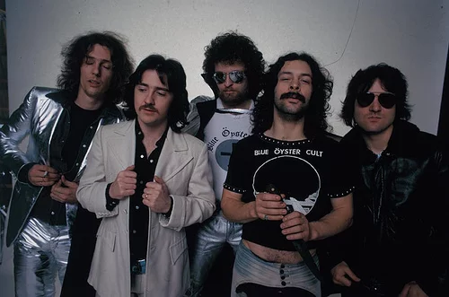
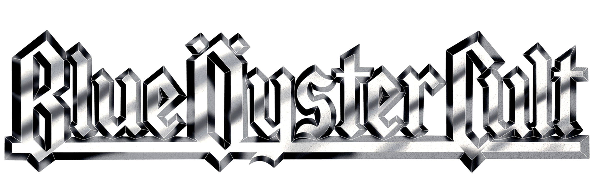

The Band We Know as Blue Öyster Cult
Blue Öyster Cult is a rock band formed in New York in the late 1960s and pioneered music genres like heavy metal. With over 7 million albums sold around the world, 14 studio albums and 8 live albums released, there are plenty of tracks to listen to! The original and most successful lineup includes Eric Bloom, Donald "Buck Dharma" Roeser, Allen Lanier, Albert Bouchard, and Joe Bouchard. While many of their songs are written by the band members themselves, Blue Öyster Cult is known for having many outside writers. One example is Patti Smith, the ex-boyfriend of Allen Lanier. Blue Öyster Cult released their first album in 1972 but it was not until 1976 with their platinum hit (Don't Fear) The Reaper that they found global success. The story of Blue Öyster Cult is quite interesting, this site is a fan site dedicated to the history and lore of this band.
 Origin as Stalk-Forrest Group
The band Blue Öyster Cult as we know it started out rough. A group of college students attending Stony Brook University in New York finally struck a record deal. Electra, the label that had bands such as the Doors at the time, funded the fledling band Stalk-Forrest Group with $70,000 (That is nearly $500,000 in today's money!). To summarize the events, the group wrote and recorded a full-length LP under current lead vocalist, Les Braunstein. Braunstein, unhappy with the creative direction the band was taking, left and was replaced by new lead vocalist Eric Bloom. With no final product, Electra ended their contract and Andy Winters left being replaced by Joe Bouchard. Sandy Pearlman, the band's manager, convinced Columbia Records to let the band record a demo.